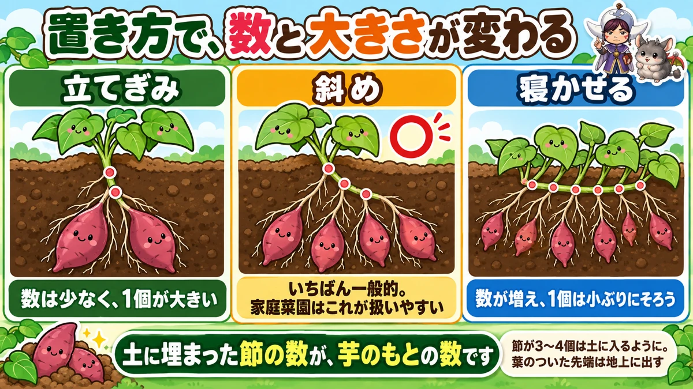
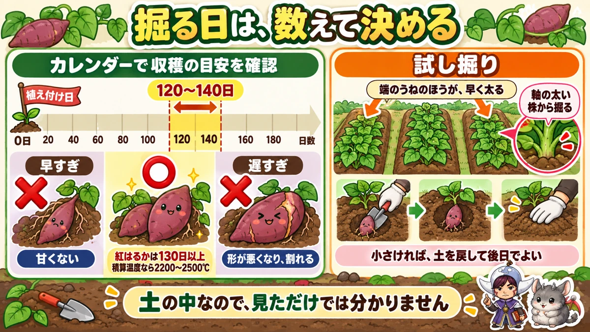
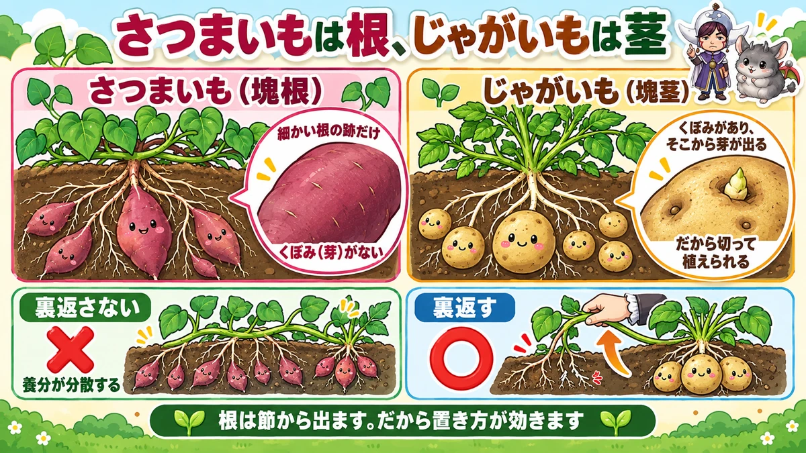

さつまいもは、埋めた節の数だけ芋ができます🍠 苗の置き方で決まる
🍠「葉ばかり茂って、掘ったら芋がなかった」
🍠「植えて数日で、苗が枯れてしまった」
🍠「いつ掘ればいいのか、まったく分からない」
どうも、8150（えいこう）です🌱 家庭菜園歴8年、理科の教員免許を持っていて、有機・無農薬で野菜を育てています。
前回はスイカでした。今日はさつまいもです。
以前★つる返しの記事を書きましたが、今日は★植え付けと収穫の話をします。
先に、この記事でいちばん言いたいことを言っておきますね。
★芋ができるのは、土に埋まった「節」です。
だから★苗をどう置くかで、芋の数と大きさが変わります🍠
まず、さつまいもの基本データ
3つだけ押さえてください
- 科：ヒルガオ科（連作にわりあい強い野菜です）
- 植え付け：5月〜6月上旬
- 収穫：9月〜11月
※時期は中間地（関東〜関西の平野部）が目安。寒い地域は少し遅らせ、暖かい地域は早めに。
うね幅1m、株間30cm
★うね幅は1mほど、株間は30cmです。
黒いポリマルチを張ると、★地温が上がって初期の育ちがよくなります。雑草も抑えられます。
★肥料は、入れません
ここが他の野菜といちばん違うところです。
★さつまいもには、肥料をやりません。
前に何かを育てていた畑なら、★残っている肥料だけで十分です。
つるボケという失敗
肥料を入れるとどうなるか。
★葉と茎ばかりが茂って、芋がほとんどつきません。
これを★つるボケといいます。特に窒素が多いと起きます。
「元気に育ってるな」と喜んでいたら、★掘ってみて何もない。私も1年目にやりました😅
痩せた土なら、堆肥だけ
畑を始めたばかりで土が心配なら、肥料ではなく堆肥です。
★牛ふん堆肥を、畳1畳ぶんに2〜3L。
★植え付けの2〜3週間前に入れて耕してください。
★技術よりも、水はけと日当たりのほうが効きます。ここは何より優先してください。
★苗の置き方で、決まります

芋になるのは、節です
まず仕組みからいきます。
さつまいもの苗は、★葉のついたつるを切ったものです。根はありません。
土に挿すと、★節の部分から根が出ます。そして★その根の一部が太って、芋になります。
つまり★土に埋まった節の数が、芋のもとの数です。
だから、置き方で変わります
ここから本題です。
- ★立てぎみに挿す … 埋まる節が少ない → 数は少なく、1個が大きくなる
- ★斜めに挿す … 中間。いちばん一般的な置き方です
- ★寝かせて挿す … 埋まる節が多い → 数が増え、1個は小ぶりにそろう
★正解はありません。何を穫りたいかで選んでください。
私は、斜めにしています
家庭菜園なら★斜め植えが扱いやすいと思っています。
数もそこそこ穫れて、★大きさもほどよく揃います。
★焼きいもにしたいなら立てぎみ、たくさん穫って配りたいなら寝かせぎみ。そんな選び方でいいと思います。
深さの目安
どの置き方でも、★節が3〜4個は土に入るようにしてください。
葉のついている先端は、★地上に出します。ここまで埋めないでください。
★最初の2週間が、いちばん危ない
根がつく前に、干上がります
さつまいもの失敗で、意外と多いのがこれです。
★挿した直後に枯らしてしまう。
苗には根がありません。★水を吸えないまま、日差しにさらされている状態です。
マルチが、熱くなります
さらに、黒いマルチを張っていると★表面がかなり熱くなります。
5月下旬の晴天だと、★触れないくらいになる日があります。
★根がつく前の苗には、これがこたえます。
不織布を、2週間
対策は簡単です。
★不織布を1〜2枚、ふわっとかける。
★2週間ほどで根がつきます。そうしたら外してください。
私はこれをやるようになってから、★植え付けの失敗がなくなりました。
つる苗より、ポット苗
もうひとつ。
ホームセンターでは★ポットに植わった苗も売っています。
★こちらのほうが失敗しません。しかも少量から買えます。
★家庭菜園なら、ポット苗をおすすめします。10本も20本も要りませんよね。
夏のあいだにやること
つる返しだけです
植え付けが終われば、あとはほとんどやることがありません。
ひとつだけ★つる返しをしてください。
なぜ裏返すのか
つるが伸びると、★地面についた節からも根が出ます。
すると★そこにも芋を作ろうとして、養分が分散します。
だから★つるを持ち上げて裏返し、その根を切ります。★以前の記事で詳しく書きました。
水やりも、要りません
さつまいもは乾燥に強い野菜です。
★よほど日照りが続かないかぎり、水やりは不要です。
★肥料もやらない、水もやらない。手のかからなさは野菜のなかでも上位です。
★掘る日は、数えて決めます

120〜140日
さつまいもも、スイカと同じで★見ただけでは分かりません。土の中ですから、なおさらです。
目安は★植え付けから120〜140日です。
★紅はるかなら130日以上をみてください。
こちらも積算温度
より正確にいくなら、★積算温度です。
★2200〜2500℃で収穫期になります。
暑い夏だった年は★例年より早く掘れる、ということですね。
早すぎ・遅すぎ、両方だめです
- ★早すぎる … 味が乗っていません。甘くありません
- ★遅すぎる … 大きくなりすぎ、形が悪くなり、割れます
★どちらも「もったいない」で起きます。数えて、いったん試し掘りしてください。
★試し掘りは、端のうねから
ここが実用的なコツです。
- ★真ん中のうねより、端のうねのほうが早く太ります
- ★株元の軸が太い株から掘ってください
★端の太い株を1株。それで畑全体の様子が分かります。
小さかったら、戻します
掘ってみて小さかったら、どうするか。
★土と通路を元どおりに戻してください。
そのまま育ちます。★掘ってしまったら終わり、ではありません。
学ぶ：芋は、根が太ったものです🔬

じゃがいもとは、別ものです
ここが今日いちばん面白いところです。
さつまいもとじゃがいも。★どちらも土から掘る「いも」ですが、正体がまるで違います。
- ★さつまいも … 根が太ったもの（塊根）
- ★じゃがいも … 茎が太ったもの（塊茎）
見れば分かります
じゃがいもをよく見てください。★表面にくぼみがあって、そこから芽が出ますよね。
★あれは茎にある「芽」です。だからじゃがいもは切って植えられます。
さつまいもには、★あのくぼみがありません。表面に細かい根の跡があるだけです。
だから、置き方が効くんです
ここで話がつながります。
さつまいもは★根が太ったものでした。
そして根は、★節から出ます。
★節が土に入っていなければ、根も出ないし、芋にもなりません。
★苗の置き方が芋の数を決めるのは、こういう仕組みだからです。
つる返しも、同じ理屈
つる返しの話も、これで説明がつきます。
つるの途中の節が地面につくと、★そこからも根が出ます。
すると★株はそこにも芋を作ろうとします。
でも★途中の節は土が浅く、栄養も届きにくい。だから小さい芋がたくさんできて、肝心の株元が太らない。
だから★裏返して、根を切るんですね。理屈が分かると、面倒な作業も意味が見えてきます☺️
まとめ
ここまで読んでくださって、ありがとうございます！
- ★さつまいもはヒルガオ科。連作にわりあい強い
- ★うね幅1m、株間30cm、黒マルチ
- ★肥料は入れない。前作の残肥で十分
- ★窒素が多いと、つるボケで芋がつかない
- ★痩せた土なら牛ふん堆肥を畳1畳に2〜3L、2〜3週間前
- ★水はけと日当たりが、技術より効く
- ★芋になるのは、土に埋まった節から出た根
- ★立てぎみ＝数が少なく大きい／寝かせぎみ＝数が多く小ぶり
- ★家庭菜園は斜め植えが扱いやすい
- ★節が3〜4個は土に入るように挿す
- ★挿してからの2週間が危ない。不織布を1〜2枚かける
- ★ポット苗のほうが失敗が少なく、少量で買える
- ★夏はつる返しだけ。水やりも要らない
- ★収穫は植え付けから120〜140日（紅はるかは130日以上）
- ★積算温度なら2200〜2500℃
- ★早すぎると甘くない、遅すぎると割れる
- ★試し掘りは端のうね、軸の太い株から
- ★小さければ土を戻して後日
- ★さつまいもは根、じゃがいもは茎
全部やろうとしなくて大丈夫です。まずは★植えたあと、不織布を2週間かけてみてください。ここを越えれば、あとは楽な野菜です🍠
次回は、マルチの話です。★黒と透明と銀色で、まったく別の道具だという話をします🌱
黒マルチ
さつまいもは地温が要ります。マルチを張ると、植え付けが早められます。


敷きわら
つる返しのあと、つるの下に敷いておくと不定根が張りにくくなります。
![[商品価格に関しましては、リンクが作成された時点と現時点で情報が変更されている場合がございます。]](https://hbb.afl.rakuten.co.jp/hgb/56bc2fb2.ff40a6e6.56bc2fb3.618f6a70/?me_id=1257026&item_id=10000211&pc=https%3A%2F%2Fthumbnail.image.rakuten.co.jp%2F%400_mall%2Fsharuka%2Fcabinet%2F09042254%2Fimgrc0081094692.jpg%3F_ex%3D240x240&s=240x240&t=picttext "[商品価格に関しましては、リンクが作成された時点と現時点で情報が変更されている場合がございます。]")
三角ホー
広がったつるの間の草を削るのに、これがいちばんラクです。

あわせて読みたい